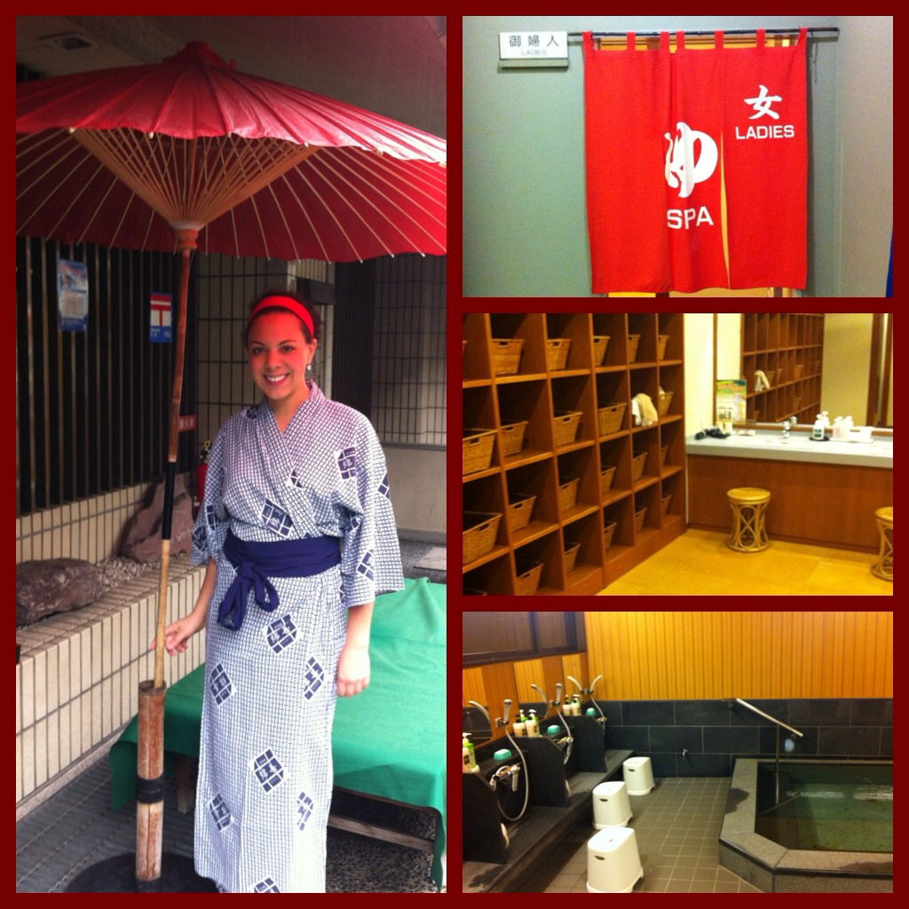
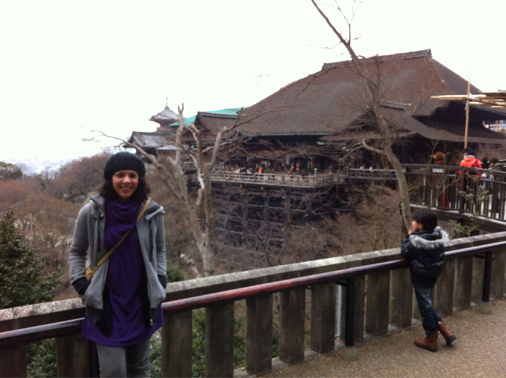

Kyoto
How Do We Get There From Here? and Other Short Stories
It's just nearing 8 o'clock when we arrive in Kyoto. As I disembark from the train, I realize my traveling companion, when standing, comes up to no higher than my shoulder blade and is actually closer in age to a kindergartner than to me. I quickly reassure myself that I, too, look young at times and my instant attraction to this young man was not the least bit odd or, in more apropos terms, creepy.
The directions from the subway seemed easy enough - only eight minutes! Well my 18% decided to fail me again and my ridiculously awful sense of direction kicked itself into high gear. For heaven's sake it probably helped little I had exited from the wrong station altogether. Altogether. We had found ourselves in a sure fire recipe for disaster.
Up one street and down another I went... as did 8 o'clock... and 9 o'clock. And so did 45 degrees and 40 degrees... Expletives started shooting into the air in whispered form (as the Japanese are such a soft people and no one means any disrespect). I was cursing this city, the subway, the directions! Eight minutes! "Try 45", I huffed at no one in particular. Forty five minutes! Well, maybe 20 at this point but who was paying attention? How do we get there from HERE?! And WHERE, pray tell, is HERE?! Warmed by only my fury and a fashion scarf, I finally came upon Watazen Ryokan, my home for the next two nights.
Upon entering, the sweet check-in boy only infuriated me more by welcoming me with such vigor and bowing and smiles. Boy was he all smiles with the bowing. "Ok fine." I thought, "It's not so bad here. I guess it was only an extra 10 minutes." Dang him! Anger! But it was gone. And I even got a free pen out of the deal. What can I say? I needed the pen.
After that it was all wine and roses. I got to my room and my futon was laid out for me, tea on the table. Complementary breakfast began at seven and the communal bath was downstairs. Excuse me, come again? That's right, toilet here, bath down there. I sorta prepared for this and had my game plan at the ready. In the spirit of full transparency, it didn't include getting undressed in front of a room full of random women part of my plan (which, if you're putting all those pieces together means that I wasn't going to shower for two days. Oh, hush. I've done it before...). I was hoping, however, things would be different upon my arrival.
Once alone in my sparse but comfortable room, I decided I'd go down to Rome and see what all the fuss was about. Goodness gracious there was a spa down there! The bath is actually a hot spring and they have everything you'd get at Burke Williams except everything but shampoo, conditioner, and lotion. Wowzers! I was on board. I was so on board I took a dip right then. It was perfect after my long day.
I woke up early today, refreshed, and headed to breakfast. My route was plotted: Golden Pavilion, Ryoanji Garden, and Kiyomizu-dera, all via the bus. So, I got my pass and headed out. Good gracious is this place beautiful; I could wander here for hours upon end. I'm even mastering asking people to take pictures of me! Hey, you only live once, right?
I enjoyed a traditional lunch at a local restaurant recommended to me by today's sweet front desk guy and it was a true exercise in complexity as the spot was undeniably Japanese; there was no communication happening there whatsoever. To my heart's delight there was an all you can eat buffet and that communicated quite easily... The sad news is that I had absolutely no idea what was lining it. Thankfully I saw some fried things and potatoes that I swear we're Oreida. If push came to shove, I would dine on fried mystery meat and French fries. But, in the end, all of the offerings were both delicious and authentic and I'll never need to know what the tofu was sitting in or what was actually pickled on my plate.
Following my dining adventure I walked through the old city of Gion after urban hiking the trail up to Kiyomizu-dera's perch in the sky. It was simply breathtaking. I actually felt that I was in Memoirs of a Geisha... Because I spotted one! Woot! Mission accomplished, Kyoto, mission accomplished. Those girls are stunningly beautiful. So much so that I just walked and stared; not too different from my usual, but still, they're gorgeousity.
I arrived back at the hotel in time for my dinner to be served in my room, which you can experience below. It ranks up there with Michael Mina and Quince (and any Christmas with you, Ma!) as one of my top, all-time most exquisite dining experiences. This was done so right with some of the best sushi I've ever had mixed with items I didn't know you were supposed to eat or should. I was (kinda) speechless and I didn't even mind that I was at it alone. It's lovely when that happens, right?
I took in a show later this evening and now I'm ready for some tea and a late night dipper. It's supposed to rain tomorrow but we can't worry about that now. It will come if it comes and it will do what it does. As for me, I'm going to go soak my little feet and snuggle into my bed, hopefully hearing the patter of small shoes running down the street outside my window...
I don't know how it happens, but it happens every time...
Ok not every time. In fact, with how much I travel, almost missing my flight (and then ACTually missing it in college this one time and that little mishap in Africa last year...) should occur more than it does. It's happened maybe five times. Maaaaaybe five times. I mean, I cut this stuff close. Period. I hate spending my time in airports where no good food exists and the people watching, ironically, is mediocre at best. Most of the time, though, it's because I am the QUEEN of procrastination. Friends, family, it's like pulling teeth to get me to the airport on time and it drives them nuts. Debs is used to it by now but friends get so nervous that they've started going without me, promising excitedly to "meet you there!"
And who knows why? I'm already ready. I've packed and double checked. There has not been an instance in recent history that I have forgotten to bring something I've needed. We're set. We are all set. Except there's always something to do. Did I empty the trash? Oh! Wipe down the bathroom. I just hate coming home to a messy house. I should vacuum. As I'll be away for a week or so, there's is no need for additional dust to accumulate. Is my computer off? Oh! Before I turn it off I should check Facebook. I wonder if taking out the wall plugs would be efficient or if it's all rubbish? Yep. These things happen each time I go to the airport.
Interestingly enough, none of those things can hinder me here in Asia. Because I don't live here. Cleaning up consists merely of putting my things back in the one bag I brought. And, since I repack every night, we're set! All set and ready to go. Except that I hate waiting at airports. So I never want to leave too early.
Ha! I'm sure you can just guess what comes next. Remember that guy on my very first flight? Breathing room. I needed breathing room. Today, I seemed to forget that, again, I needed breathing room. You see, Kyoto main station is two hours from Tokyo proper which, in turn, is one hour from Narita airport. Gion, where Watazen is, is another half hour away (what with the walking and all.*). But, not wanting to leave too early, I planned for three hours. Add that up real quick: three full hours. Nope. Not enough time at all. I had to actually take the subway to the train, factor in transfer time and, who would guess, wait time! Somehow, after all was said and done, I arrived at Narita within the hour of my departure. I'm now starting to understand my mom's worry and her trepidation upon letting me out of the house to board a plane, especially an international one.
Hey-o! You don't even do that for a SFO > HOU flight. Whoops! I had myself a sufficient freak out when this all came to life in my conscious mind, seeing as my unconscious strategist part royally let me down on this one. I got on the wrong train thinking that I would beat the system. Finding I'd made a huge mistake, I promptly got off the wrong train as I realized no one was beating the system in a battle between themself and Japan's rail. I think we can safely say we've been down that road...
During my (apparently daily!) pep talk with myself I repeated my mantra of "go with the flow", talking myself off the encroaching ledge made of a multitude of hours at the stinking airport. It was totally fine that I be at the airport. I could eat there and sit there and I'm sure more. My entertaining these riveting evening activities was cut short, however, when the thought of my entire itinerary being canceled due to my no-show status popped up. Uh huh. It goes from the sublime to the ridiculous with me. Of course they weren't going to cancel my ticket. But would they? Would they?! Freak out.
By the time I got to the fourth floor of the airport (no one is making accusations of efficiencies here, people), I was sufficiently drenched in my own sweat due to my aptly planned wardrobe choice for the day. It was perfectly suited for my chilly block of a walk, barring any mid-afternoon Japanese slolom dashes. I digress. I was calm. What I imagine I would be like if I found myself in a chocolate factory, faced with Johnny and not Gene (because he just really creeps me out though he performed better in the role).
Anyway. I was calm! I let the girls at the counter know that I would need to switch my flight due to my idiocy and then it happened. Something went on at the Air China gate that I have never seen. Being that I fly United, I may never see it again. It was like my glimpse of the Northern Lights.
They took my passport, checked my visa, noted that my bag was too heavy for regulation and we had a proper giggle over that. I just overpacked! The boots. Why don't we take the boots out? That's best. Oh! Why thank you for the extra bag to carry! This went on for maybe 10 minutes. Like I was there two hours prior. We were having the time of our lives! All night. We had all night!
After what I could only assume was a call to the gate, my bag, now five lbs lighter, was whisked away by a small man not unlike Mr. Miyagi in retirement. And then I was walked down the hall, through crew security, waited for at immigration, and marched (who's glad they've had years of street speed walking practice now?!) to the farthest gate away by the sweetest counter attendant I have ever met. Well done Star Alliance and well done Air China. And well done Premiere Exec because I kiiiinda don't think they do that for everyone.
So now I'm here, as previously scheduled, on Air China flight 926 with non-stop service to Beijing, China. I'm not sure how it happens - I talk myself out of it, run myself out of it, smile myself out of it - but I make it every time.
*Editor's note: upon further analysis of my earlier blunder I realized the ryokan is, indeed, a mere eight minutes from the subway... Bah!)
Also, I think I'm drunk on this flight. The stewardess (what I still call flight attendants, deal) insisted I have wine with dinner. This is it: I asked for wine but she didn't have it so I got a beer and then she came back and insisted (!) (so sweet, so accommodating) I take it. So I did. I haven't eaten since breakfast. (giggle)